Doamna din salonul patru
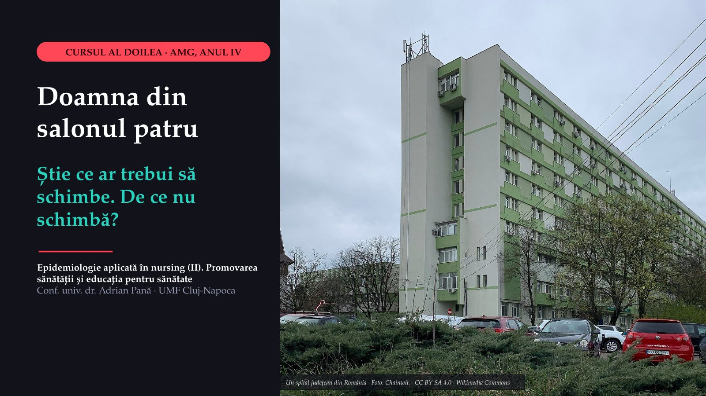
1 / 45Ce poate face asistentul medical până la externare?
![CAZUL ȘEDINȚEI · MEDICINĂ INTERNĂ, SPITAL JUDEȚEAN FOAIE DE OBSERVAȚIE · EXTRAS Pacienta doamna M., cincizeci și doi de ani Internată pentru valori foarte mari ale tensiunii arteriale Înainte amețeală și amorțeala mâinii drepte, trecute în câteva ore Locuiește într-o comună la patruzeci de kilometri de oraș Lucrează în comerț Fumează de la optsprezece ani Medicul de familie „tensiunea puțin mare”, acum câțiva ani; nu a mai revenit la control Caz construit pentru curs; persoana nu există. Ce poate face asistentul medical până la externare?](diapozitive/C02/002.jpg) 2 / 45
2 / 45Ce află asistentul medical
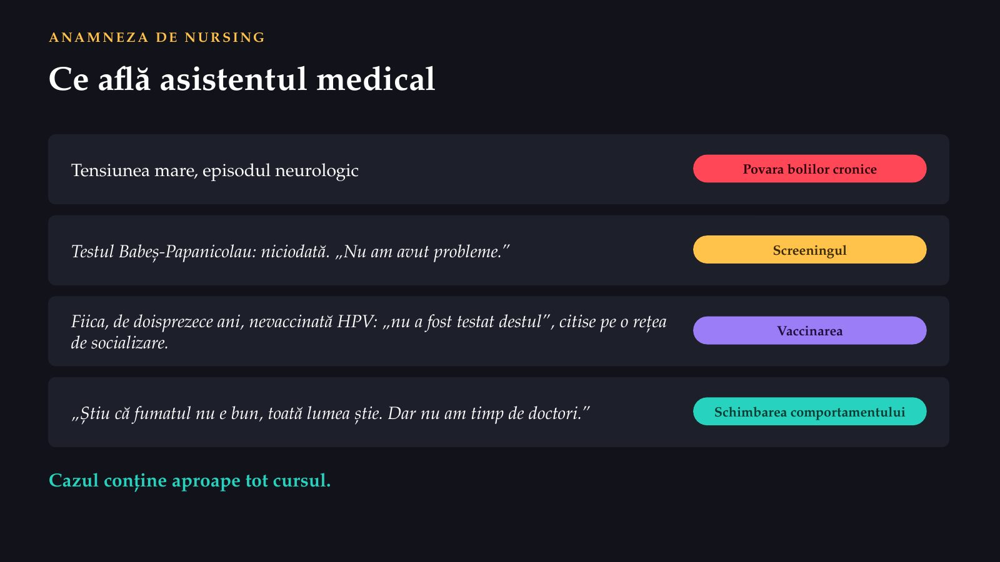
3 / 4550%
 4 / 45
4 / 45Două părți, un singur caz
 5 / 45
5 / 45Ce contează cel mai mult pentru sănătatea ei în următorii zece ani?
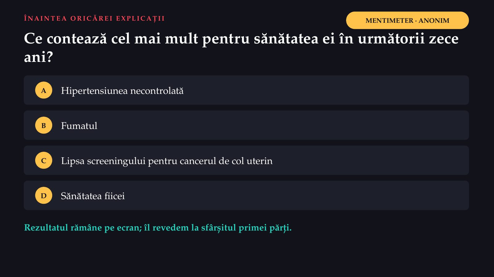
6 / 452,5
![EUROSTAT · RATE STANDARDIZATE DE DECES LA 100 000 DE LOCUITORI · 2023 Diferența stă în inimă și în vase România Media UE Boli ale aparatului circulator 787,1 313,0 Tumori 244,3 243,0 Boli respiratorii 108,9 75,2 Boli digestive 74,1 42,8 Cauze externe 44,9 49,4 2,5 ori mai mare la bolile circulatorii: 787,1 ÷ 313,0. Rata standardizată elimină efectul vârstei, deci o populație mai bătrână nu explică diferența. Pentru aprofundare: tranziția epidemiologică (Omran): infecțiile au avut în trecut o pondere mult mai mare printre cauzele de deces; astăzi domină bolile cronice. Toate cauzele: 1 376,1 în România, 963,4 în UE. Sursa: Eurostat, cauzele de deces, rate standardizate 2023 (registru A055); calcul în note, A213; Omran, republicat în Milbank Quarterly, 2005 (A210).](diapozitive/C02/007.jpg) 7 / 45
7 / 45Pe primul loc din 27 la decesele tratabile
![MORTALITATEA EVITABILĂ · RATE STANDARDIZATE LA 100 000 · 2023 Pe primul loc din 27 la decesele tratabile România Media UE Prevenibilă 264,0 150,9 Tratabilă 199,7 86,8 al patrulea loc în UE primul loc în UE Mortalitatea prevenibilă cuprinde decesele care pot fi evitate în principal prin sănătate publică și prevenție primară: domeniul primei părți a cursului. Mortalitatea tratabilă, la care România e pe primul loc în UE, ține de îngrijirile medicale la timp și eficace, inclusiv prevenția secundară și tratamentul. Sursa: Eurostat, mortalitatea evitabilă 2023 (registru A064, A065, A067). Noțiunile, din primul curs.](diapozitive/C02/008.jpg) 8 / 45
8 / 4548,4%
![OMS · ADULȚI DE 30–79 DE ANI · ROMÂNIA, 2019 Unul din trei hipertensivi nu știe 48,4% dintre adulți au hipertensiune (interval de incertitudine 41,6–55,2%) 67,8% diagnosticați 32,2% nu știu Ce declară oamenii · ancheta europeană, 2019 Au hipertensiune 15,7 21,9 România Media UE O explicație posibilă, pe care datele nu o pot dovedi: nimeni nu declară o boală despre care nu știe. Comparația cu estimarea OMS este aproximativă (populații diferite). Tensiunea arterială sistolică crescută este primul factor de risc din România după anii de viață ajustați pentru dizabilitate (estimare GBD 2023). Diagnosticul e numai prima treaptă: tratamentul și controlul nu sunt prezentate. Sursa: OMS, estimări 2019, standardizate pe vârstă (registru A093, A094; calculul A214); EHIS 2019 (A092); GBD 2023 (A100).](diapozitive/C02/009.jpg) 9 / 45
9 / 45La fiecare contact, nu numai când pacientul se plânge
![CE FACE ASISTENTUL MEDICAL La fiecare contact, nu numai când pacientul se plânge 1 Măsoară corect tensiunea arterială la fiecare contact. 2 Identifică factorii asociați: fumatul, excesul ponderal, sedentarismul, diabetul. 3 Explică valorile și de ce tratamentul se ia și în zilele în care pacientul se simte bine. 4 Monitorizează aderența la tratament. 5 Îndrumă pacientul spre medicul de familie, pentru control periodic. Externată fără o programare la medicul de familie și fără o explicație clară a tratamentului, doamna M. ar fi o ocazie de prevenție pierdută.](diapozitive/C02/010.jpg) 10 / 45
10 / 453,2
![EUROSTAT · CANCERUL DE COL UTERIN · DECESE LA 100 000 DE FEMEI · 2023 De peste trei ori mai mult decât media europeană Letonia 11,08 România 10,82 Media UE 3,4 3,2 = 10,82 ÷ 3,4. În 2022, România avea cea mai mare rată din UE: 12,0. Leziunile precanceroase se văd la screening, iar infecția cu virusul papiloma uman, cauza bolii, se previne prin vaccinare. Un deces prin cancer de col uterin este, în mare măsură, un eșec al prevenției (sinteză didactică a cursului). Sursa: Eurostat, rate standardizate de deces 2022 și 2023 (registru A211); raportul, A212.](diapozitive/C02/011.jpg) 11 / 45
11 / 455,0%
![Glucometru, teste și lanțete pentru autocontrol Foto: Confidence24 · CC BY-SA 4.0 · Wikimedia Commons ANCHETA EUROPEANĂ DE SĂNĂTATE · 2019 Diabetul pe care statistica nu-l vede 5,0% declară diabet, în România 7,4% declară diabet, în UE Cine are glicemia crescută, dar nu a fost testat, nu apare în statistica declarativă. Asistentul medical identifică persoanele cu risc (exces ponderal, istoric familial, hipertensiune) și le îndrumă spre testare; educă pacientul diagnosticat pentru autocontrol, alimentație, îngrijirea piciorului și recunoașterea hipoglicemiei.](diapozitive/C02/012.jpg) 12 / 45
12 / 45Țigara, mișcarea, farfuria
![ANCHETA EUROPEANĂ DE SĂNĂTATE · 2019 · PROCENT DIN POPULAȚIE Țigara, mișcarea, farfuria România Media UE Fumează, zilnic sau ocazional (de la 15 ani) 27,3 24,2 Bărbați: fumează 41,5 29,2 Femei: fumează 13,9 19,4 Alcool: consum excesiv, săptămânal 11,1 3,7 Mișcare în timpul liber: cel puțin 150 de minute pe săptămână 8,0 32,7 Mișcare în timpul liber: zero minute 84,0 47,3 Cinci porții de fructe și legume zilnic 2,4 12,4 Factori modificabili, dar nu numai alegeri: depind de prețuri, de locurile de mișcare, de reglementarea tutunului și a alcoolului, de normele grupului. Bronhopneumopatia obstructivă cronică ține în primul rând de fumat (sinteză didactică). Indicatorul de mișcare numără numai timpul liber; activitatea de la locul de muncă nu e inclusă. Sursa: Eurostat, EHIS, valul 2019, cel mai recent publicat (registru A028, A029, A030, A031).](diapozitive/C02/013.jpg) 13 / 45
13 / 45O singură prioritate pentru comuna ei
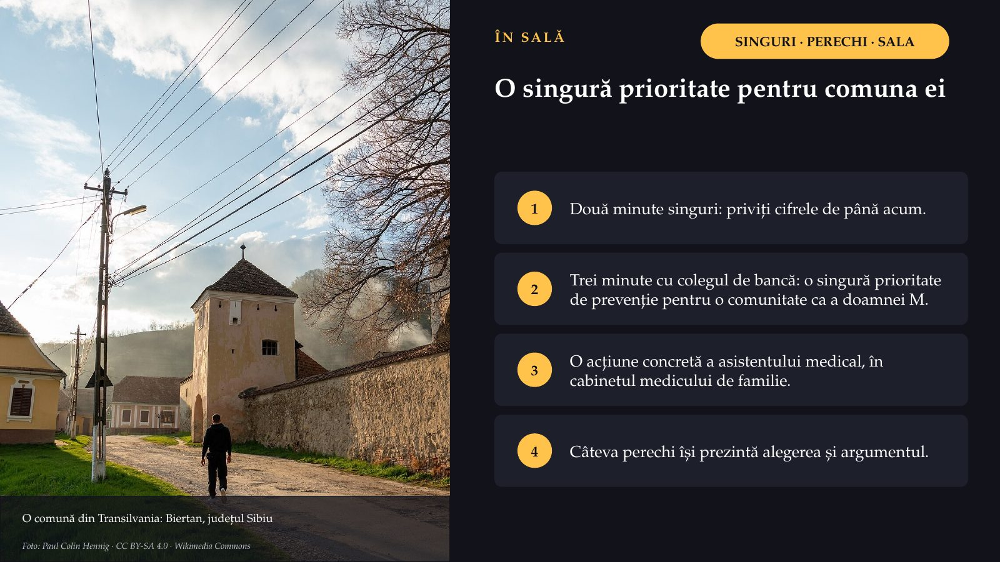
14 / 4546,3
![ECDC · OMS · TUBERCULOZA · 2024 Cea mai mare rată de notificare din UE/SEE Radiografie toracică, tuberculoză miliară · Foto: Herreros și colab. · CC BY 4.0 · Wikimedia Commons 46,3 cazuri notificate la 100 000 de locuitori (8 825 de cazuri); media UE/SEE: 8,4. România: 23,1% din cazurile UE/SEE. OMS estimează incidența reală la 60 (49–73): cazurile nedepistate continuă să transmită boala. Asistentul medical: tratamentul sub observare directă, educația pacientului și a familiei, depistarea contacților, legătura cu direcția de sănătate publică. HIV și hepatitele B și C: infecții cronice, adesea fără simptome. Prevenția: vaccinarea (hepatita B), testarea, tratamentul, siguranța actului medical; precauții standard, testare fără judecată, confidențialitate.](diapozitive/C02/015.jpg) 15 / 45
15 / 45De la 94% la 66%: rujeola s-a întors
![OMS–UNICEF · ACOPERIREA CU VACCIN RUJEOLIC · ROMÂNIA De la 94% la 66%: rujeola s-a întors focare posibile chiar la 85–90% 50% 60% 90% 100% ECDC: cel puțin 95%, cu două doze … 94% 83% 78% 66% 66% Prima doză 90% 71% 62% 68% 68% A doua doză 2012 2022 2023 2024 2025 25 505 cazuri raportate la OMS în 2024 30 692 de cazuri după ECDC, în 2024: România are 87% din cazurile UE/SEE; 22 de decese 6 837 cazuri în 2025 Sursa: estimările OMS–UNICEF (registru A118); OMS (A117); ECDC (A119); pragul focarelor (A113). Diferența dintre sursele pentru 2024 nu este explicată.](diapozitive/C02/016.jpg) 16 / 45
16 / 45Controlul tensiunii după episodul neurologic, ca să nu urmeze un accident vascular cerebral, este prevenție…
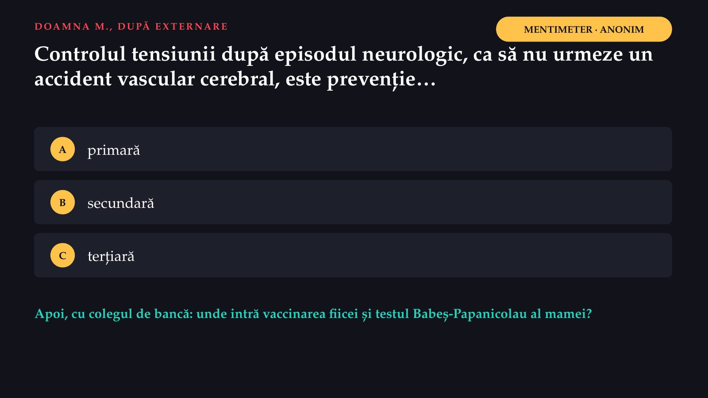
17 / 45Răspunsul apare după ședință
Răspunsul apare după ședință
Fereastra în care lucrează screeningul
![Frotiu cervical colorat Papanicolau, la microscop Foto: Adel.stoyanova · CC BY-SA 4.0 · Wikimedia Commons ISTORIA NATURALĂ A BOLII · CDC Fereastra în care lucrează screeningul Expunerea Boala subclinică, fără simptome incubație (infecții), latență (boli cronice) Boala clinică aici caută screeningul Screeningul: identificarea prezumtivă a unei boli sau a unui defect nerecunoscute, prin teste, examinări sau alte proceduri aplicate rapid (Commission on Chronic Illness, 1951; în ghidul OMS Europa, 2020). Nu pune diagnosticul: un rezultat pozitiv trimite la confirmare, iar unul negativ nu exclude boala.](diapozitive/C02/019.jpg) 19 / 45
19 / 45Zece criterii pentru un screening justificat
![WILSON ȘI JUNGNER · OMS, 1968 Zece criterii pentru un screening justificat 1 O problemă de sănătate importantă 2 Un tratament acceptat pentru boala recunoscută 3 Mijloace de diagnostic și de tratament 4 Un stadiu latent sau simptomatic precoce 5 Un test sau o examinare potrivită 6 Un test acceptabil pentru populație 7 Istoria naturală a bolii, bine înțeleasă 8 O politică: cine este tratat ca pacient 9 Un cost echilibrat față de cheltuielile de îngrijire 10 Depistare continuă, nu „o dată pentru totdeauna” Col uterin: unele criterii par îndeplinite (importanța problemei, faza precanceroasă); pentru programul din România se judecă și testul acceptabil, mijloacele pentru cele cu rezultat pozitiv, continuitatea depistării. Sursa: Wilson și Jungner, OMS, 1968, în formularea ghidului OMS Europa, 2020 (registru A806).](diapozitive/C02/020.jpg) 20 / 45
20 / 45Depresia postpartum: o căutăm la toate mamele din comună?
 21 / 45
21 / 45Același test, două populații
![UN TEST IPOTETIC · SENSIBILITATE 90%, SPECIFICITATE 90% Același test, două populații Sensibilitatea: proporția bolnavilor pe care testul îi identifică corect (test pozitiv); un test sensibil scapă puțini bolnavi. Specificitatea: proporția celor fără boală pe care testul îi identifică corect (test negativ); un test specific dă puține rezultate fals pozitive. Valoarea predictivă pozitivă: proporția celor cu test pozitiv care au într-adevăr boala. Populația A: boala K la 100 din 1 000 90 90 50% Populația B: boala K la 10 din 1 000 9 99 8,3% pozitivi bolnavi pozitivi sănătoși (fals pozitivi) Un rezultat pozitiv se confirmă prin investigații. Screeningul țintit pe grupurile cu risc: o proporție mai mică dintre pozitive sunt fals pozitive.](diapozitive/C02/022.jpg) 22 / 45
22 / 45A treia populație: boala K la cincizeci de persoane
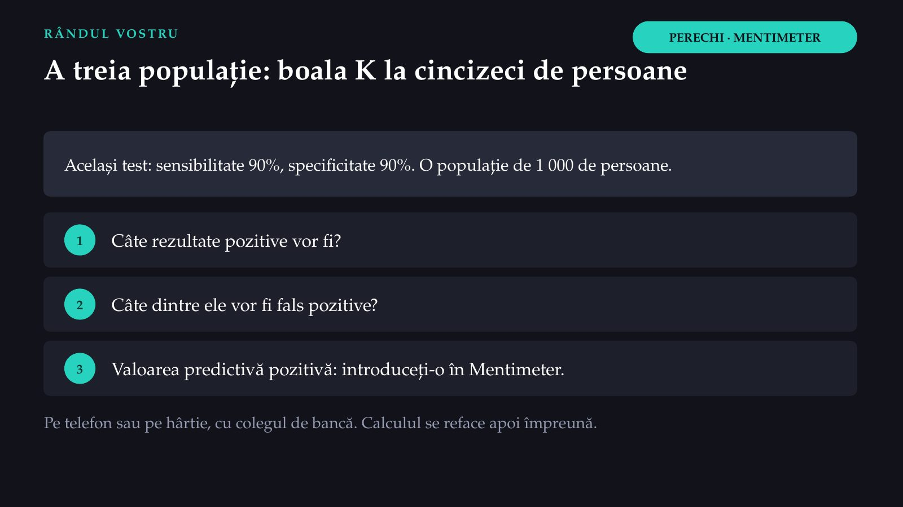
23 / 45Răspunsul apare după ședință
Răspunsul apare după ședință
De la naștere la adolescență
![CALENDARUL NAȚIONAL · VERSIUNEA ECDC DIN 6 FEBRUARIE 2026 De la naștere la adolescență La naștere BCG (tuberculoza) și prima doză de hepatită B 2, 4 și 11 luni Difterie, tetanos, tuse convulsivă, poliomielită, Haemophilus influenzae tip b, hepatită B; pneumococic conjugat 12 luni și 5 ani Rujeolă, oreion, rubeolă 6 ani Rapel: difterie, tetanos, tuse convulsivă, poliomielită 14 ani Rapel: difterie, tetanos, tuse convulsivă 11–26 de ani HPV nonavalent, fete și băieți; femeile și între 27 și 45 de ani Vaccin HPV nonavalent · Foto: Aveaoz · CC0 · Wikimedia Commons Fiica doamnei M., doisprezece ani: vaccinul HPV este prevenție primară; testul mamei, prevenție secundară. Aceeași boală. Sursa: calendarul României publicat de ECDC (registru A218). Calendarul se schimbă: verificați versiunea în vigoare.](diapozitive/C02/025.jpg) 25 / 45
25 / 45Un mesaj convingător nu repară o ruptură de stoc
![DE CE A SCĂZUT ACOPERIREA VACCINALĂ Un mesaj convingător nu repară o ruptură de stoc CINCI CAUZE POSIBILE Aprovizionarea: livrări întrerupte, lanțul de frig Accesul: fără medic de familie, distanțe mari Reticența: neîncredere, informații false online Evidența: registre incomplete Resursele umane: personal puțin în asistența primară ROLURILE ASISTENTULUI (SINTEZĂ DIDACTICĂ) Administrarea: lot, expirare, lanț de frig, tehnică Informarea: beneficii, riscuri, temeri ascultate Reacțiile adverse: recunoscute, tratate, raportate Documentarea: registrul electronic și fișa pacientului Comunitatea: copiii nevaccinați, cu mediatorul sanitar Sursa: ordonanța privind asistența medicală comunitară (registru A188).](diapozitive/C02/026.jpg) 26 / 45
26 / 45Un singur cuvânt: ce îi vine în minte unei mame care ezită, când aude „vaccin”?
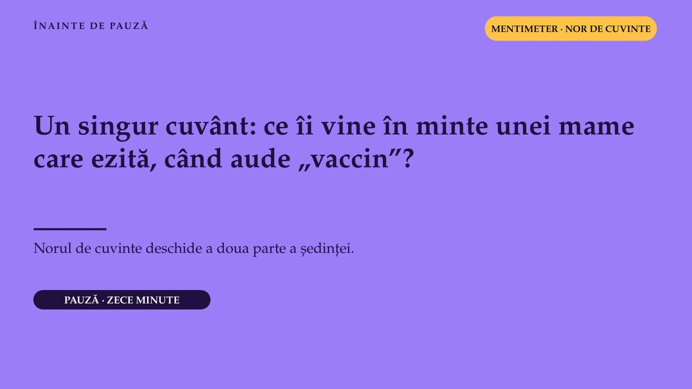
27 / 45Știe o parte. Nu a schimbat nimic.
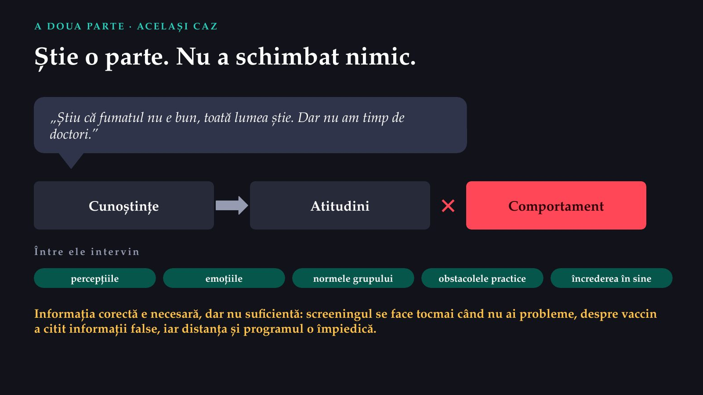
28 / 45A învăța pe cineva sau a-i schimba condițiile
![GLOSARUL OMS · CARTA DE LA OTTAWA, 1986 A învăța pe cineva sau a-i schimba condițiile EDUCAȚIA PENTRU SĂNĂTATE Experiențe de învățare: cunoștințe, motivație, alfabetizare în sănătate. PROMOVAREA SĂNĂTĂȚII Procesul prin care oamenii capătă mai mult control asupra sănătății lor. Ținta persoana sau grupul și comunitatea, și politicile Metodele informare, consiliere, exersare plus politici, mediu, comunitate, pledoarie Limita condițiile pe care persoana nu le poate schimba timp, resurse, mai multe sectoare Se completează: informarea antifumat plus interdicția în spațiile închise, prețuri mai mari, servicii de renunțare. Sursa: glosarul OMS de promovare a sănătății, 2021 (registru A801, A802); Carta de la Ottawa (A005).](diapozitive/C02/029.jpg) 29 / 45
29 / 45Cinci arii de acțiune
![CARTA DE LA OTTAWA, 1986 Cinci arii de acțiune Construirea unor politici publice favorabile sănătății: legea tutunului, alimentele Medii favorabile la locul de muncă, în școală, în comunitate Acțiunea comunitară comunitatea își stabilește prioritățile Deprinderile personale informare și educație pentru sănătate Reorientarea serviciilor de la tratarea bolii spre promovare TREI MODALITĂȚI Pledoaria, abilitarea, medierea. Asistentul pledează pentru un pacient sau o comunitate, abilitează prin educație și mediază între familie, școală, primărie și serviciile de sănătate. Glosarul OMS, 2021: ariile Cartei rămân valabile; azi se vorbește despre „sănătatea în toate politicile” și despre alfabetizarea în sănătate. 1986 Ottawa 1997 Jakarta 2016 Shanghai, Agenda 2030 Sursa: Carta de la Ottawa (registru A190, A220); glosarul OMS din 2021 (A222, A803). CRONOLOGIE · PENTRU APROFUNDARE](diapozitive/C02/030.jpg) 30 / 45
30 / 45A auzit sau a înțeles?
![GLOSARUL OMS, 2021 · PENTRU APROFUNDARE A auzit sau a înțeles? Alfabetizarea în sănătate: cunoștințele și competențele care le permit oamenilor să găsească, să înțeleagă, să evalueze și să folosească informațiile și serviciile pentru decizii privind sănătatea. Depinde și de cât de clar comunică serviciile. CE FACEȚI Pacientul explică, cu cuvintele lui, cum va lua tratamentul Cuvinte simple Puține mesaje la o întâlnire Materiale scrise clare Un prospect greu de înțeles sau o explicație grăbită la externare îi îngreunează înțelegerea, oricât de școlarizat ar fi pacientul. Sursa: glosarul OMS de promovare a sănătății, 2021 (registru A221).](diapozitive/C02/031.jpg) 31 / 45
31 / 45Trei niveluri de acțiune
![MCLEROY ȘI COLAB., 1988 · MODELUL ECOLOGIC Trei niveluri de acțiune Politici publice Comunitate Organizații Relații Persoana INDIVIDUAL Consilierea scurtă la fiecare contact: întrebați, recomandați, evaluați, sprijiniți, programați revenirea. COMUNITAR Campanii, școala, primăria, angajatorii; o zi de măsurare a tensiunii în comună. Marketingul social cercetează publicul și se evaluează; altfel rămâne un afiș. POLITICI Legislație, taxe, finanțarea programelor și a asistenței comunitare; asistentul contribuie prin pledoarie și prin datele pe care le colectează. Intervențiile numai asupra stilului de viață individual ajung să învinovățească victima. Sursa: McLeroy și colab., 1988 (registru A223).](diapozitive/C02/032.jpg) 32 / 45
32 / 45Ce cântărește o mamă înainte să spună da
![MODELUL CONVINGERILOR DESPRE SĂNĂTATE · ORIGINILE, DESCRISE DE ROSENSTOCK, 1974 Ce cântărește o mamă înainte să spună da Susceptibilitatea percepută „I se poate întâmpla fetei mele?” Severitatea percepută „Cât de grav ar fi?” Beneficiile percepute „Ce câștigăm?” Barierele percepute „Ce ne costă, ce mă sperie?” Stimulii pentru acțiune o recomandare, un simptom, boala unei rude Autoeficacitatea „Pot să o fac?” Revizuire sistematică, 2022, 32 de studii (COVID-19): beneficiile percepute, cel mai des asociate cu comportamentul (96,7%); barierele, 64%; severitatea, cel mai rar (40%). Arătați beneficiile, reduceți obstacolele. La examen: cele patru percepții și autoeficacitatea. Sursa: Zewdie și colab., 2022 (registru A810, A811); originile modelului, descrise de Rosenstock, 1974. Stimulii: forma uzuală a modelului.](diapozitive/C02/033.jpg) 33 / 45
33 / 45Stimulii pentru acțiune sunt o componentă a modelului, confirmată de revizuirea din 2022; descrierea lor urmează forma uzuală a modelului și nu se cere la examen. Revizuirea compară dimensiunile pe 32 de studii: beneficiile apar cel mai des asociate cu comportamentul, severitatea cel mai rar.
Mama care spune nu
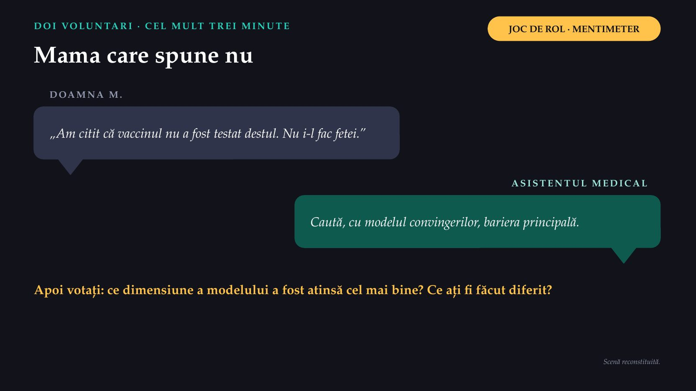
34 / 45Răspunsul apare după ședință
Răspunsul apare după ședință
Același gest, în fiecare seară, ani de zile.
![ADERENȚA LA TRATAMENT Același gest, în fiecare seară, ani de zile. Tratamentul antihipertensiv al doamnei M. AJZEN, 1991 · COMPORTAMENTUL PLANIFICAT Pastila de seară, în fiecare seară Atitudinea „medicamentul mă ajută” Normele subiective „fiica și medicul așteaptă să îl iau” Controlul perceput „am rețeta, am un memento pe telefon” Intenția ↓ comportamentul Include influența celorlalți, prin normele subiective; potrivită pentru comportamentele repetate, ca aderența la tratament. Limita, ca la modelul convingerilor: presupune o decizie rațională; obiceiul, dependența și emoțiile o pot rupe.](diapozitive/C02/036.jpg) 36 / 45
36 / 45Schimbarea este un drum, nu un moment
![PROCHASKA ȘI DICLEMENTE · MODELUL TRANSTEORETIC · PENTRU APROFUNDARE (NU SE EVALUEAZĂ) Schimbarea este un drum, nu un moment Precontemplarea informare, fără presiune Contemplarea avantaje și dezavantaje, pentru ambivalență Pregătirea un plan concret, cu o dată și sprijin Acțiunea sprijin, încurajare, monitorizare Menținerea prevenirea recăderii Recăderea: o întoarcere într-o etapă anterioară, nu un eșec definitiv Asistentul evaluează etapa fără judecată și potrivește intervenția. Sursa: Hashemzadeh și colab., 2019 (registru A813); intervențiile, în forma uzuală a modelului.](diapozitive/C02/037.jpg) 37 / 45
37 / 45În ce etapă se află?
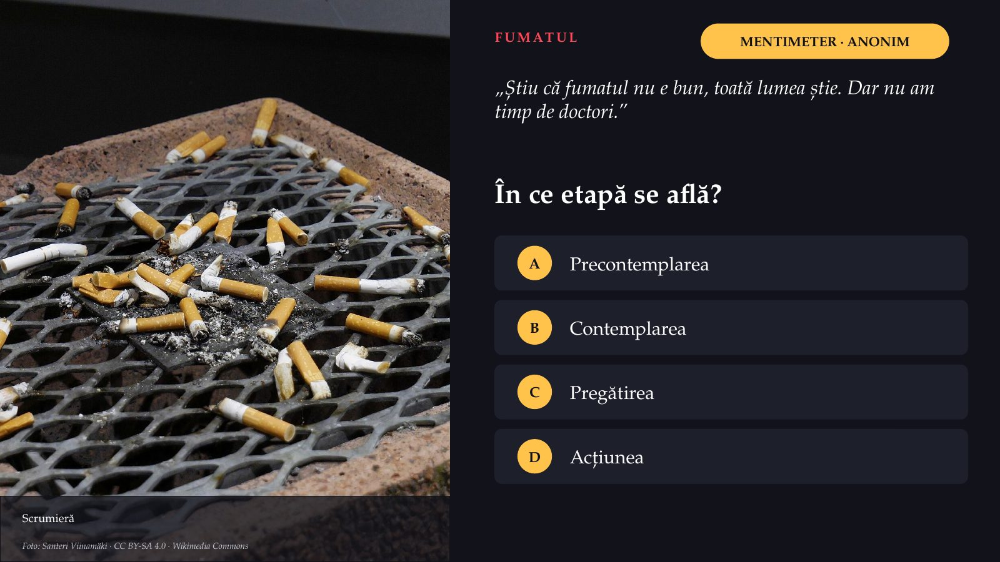
38 / 45Răspunsul apare după ședință
Răspunsul apare după ședință
Ce model pentru ce problemă
![PERECHI · SALA ALEGEȚI MODELUL Ce model pentru ce problemă O decizie punctuală: vaccinul, un test modelul convingerilor despre sănătate Un comportament repetat, influențat de ceilalți: aderența teoria comportamentului planificat Renunțarea la un obicei: fumatul, alcoolul modelul transteoretic Mediul în care trăiește comunitatea modelul ecologic, pe mai multe niveluri În perechi, alegeți o situație: prevenirea obezității într-o școală rurală · aderența la tratamentul antidiabetic într-un cabinet de medicina familiei · vaccinarea antigripală a vârstnicilor într-o comunitate reticentă. Ce model, de ce, și trei intervenții care decurg din el.](diapozitive/C02/040.jpg) 40 / 45
40 / 45North Karelia, patru decenii
![Karelia de Nord, estul Finlandei Foto: Hemmo Vattulainen · CC BY 3.0 · Wikimedia Commons 1969–1972 ȘI 2012 · PENTRU APROFUNDARE North Karelia, patru decenii Mortalitatea coronariană, 35–64 de ani, la 100 000 Bărbați 643 118 · scădere de 82% Femei 114 17 · scădere de 84% Program pe mai multe niveluri: informare, asistență primară, școli, industria alimentară, politici. În primii 10 ani, scăderea fumatului, a colesterolului și a tensiunii a explicat aproape toată reducerea. Studiu observațional. Trei principii (ipoteze de lucru, nu rezultate demonstrate): mai multe sectoare, ani de zile, date și evaluare. Un singur succes arată ce e posibil, nu ce se va întâmpla oriunde. Sursa: Jousilahti și colab., 2016 (registru A814). Gri: 1969–1972; verde: 2012. Procentele sunt cele raportate de autori.](diapozitive/C02/041.jpg) 41 / 45
41 / 45Planul de intervenție, în șapte elemente
![PENTRU LUCRĂRILE PRACTICE ȘI PROIECTUL DE ECHIPĂ Planul de intervenție, în șapte elemente 1 Problema și populația-țintă, descrise cu date 2 Nevoile și resursele comunității 3 Obiective măsurabile: ce, la cine, cu cât, până când 4 Modelul teoretic și motivul alegerii 5 Intervențiile pe cele trei niveluri 6 Indicatorii de evaluare 7 Calendarul și responsabilii INDICATORII De proces s-a făcut ce s-a planificat? De rezultat s-a schimbat comportamentul sau accesul? De impact s-a schimbat starea de sănătate? Convenție a cursului: alți autori folosesc „rezultat” și „impact” invers. La examen: proces față de schimbare.](diapozitive/C02/042.jpg) 42 / 45
42 / 45Externarea doamnei M., în câteva minute
![DE MÂINE, PE SECȚIE ȘI ÎN COMUNITATE Externarea doamnei M., în câteva minute ✓ Măsurați tensiunea și explicați valorile. ✓ Verificați că a înțeles cum ia tratamentul. ✓ Întrebați despre fumat, recomandați clar renunțarea, oferiți sprijin și o revenire. ✓ Explicați de ce contează screeningul pentru cancerul de col, cu testul din programul județului. ✓ Ascultați temerile despre vaccinul fiicei; recomandați-l clar. ✓ Îndrumați-o spre medicul de familie. Fiecare gest durează câteva minute. Împreună fac din internare o ocazie de prevenție, cu efecte modeste, dar reale. În comunitate: semnalați pacienții fără control, ziua tensiunii în comună, pledoaria pentru un serviciu de renunțare.](diapozitive/C02/043.jpg) 43 / 45
43 / 45Povara, prevenția, schimbarea: zece întrebări
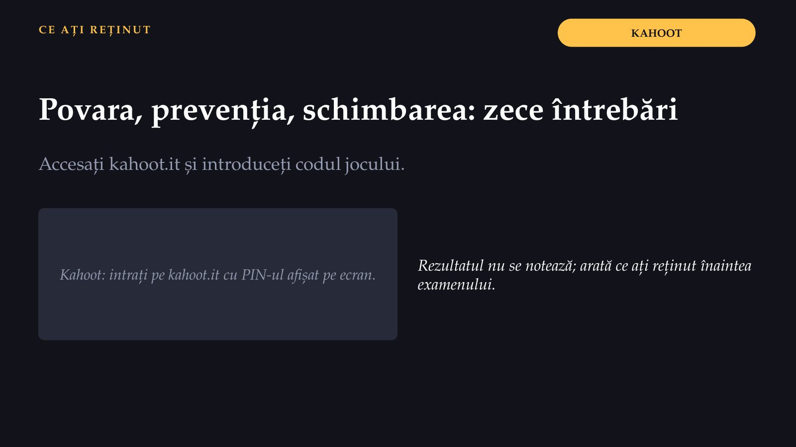
44 / 45Trei întrebări pentru final
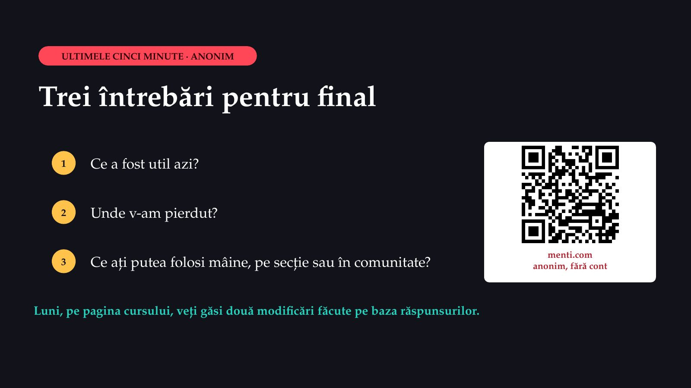
45 / 45Săgeți sau spațiu: navigare · O: vedere de ansamblu · N: notele prezentatorului · F: ecran complet · Esc: închidere